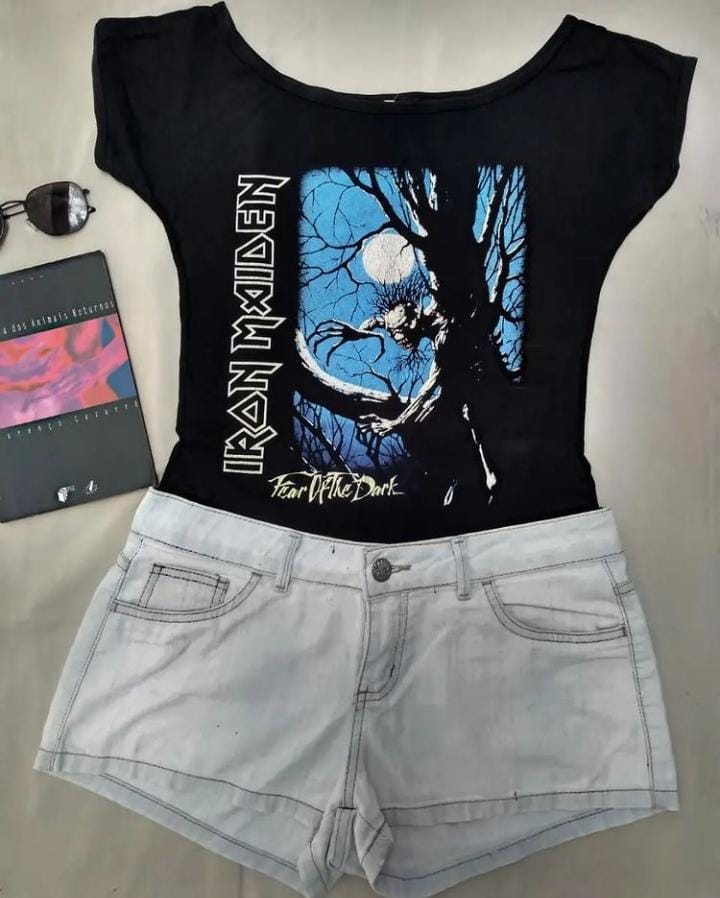
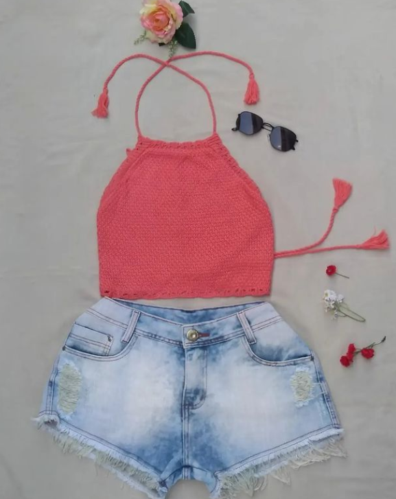
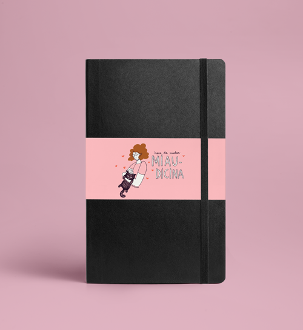
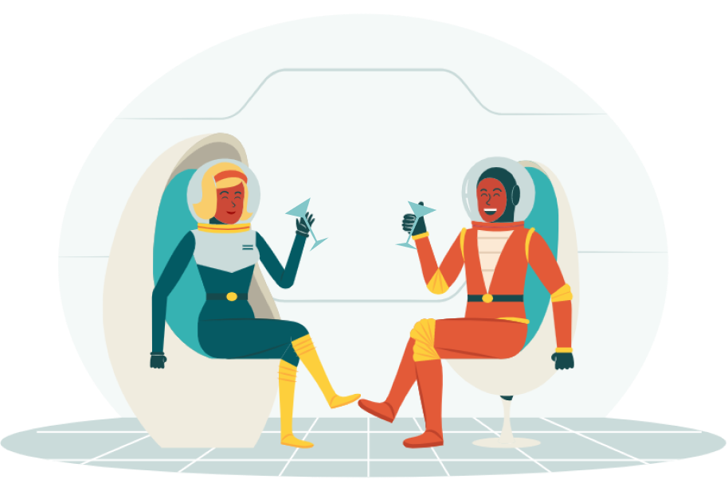

Cosmolojinha
Produtinhos de outra galáxia, qualidade nunca antes vista neste planeta, disponíveis para terráqueos
Sobre nós
Somos Cleuber, Dayane e Izadora, três tripulantes interplanetários que adoram viajar bem longe e curtir as
coisinhas bonitas que existem nessa (e em outras) galáxias. Cada um vindo de um canto, o trio se esbarrou
por acaso num workshop extraterreno de tecnologia e acabou descobrindo que tinha muito mais em comum. Entre
uma Dinamite Pangaláctica e outra, Cleuber contou do seu hobbie de bordar durante as suas viagens
supersônicas. Dayane contou tudo sobre sua atividade de moda sustentável, cuja última coleção contava com
peças garimpadas dos Arredores de Betelgeuse, passando pela Via Láctea, até Magrathea. Já Izadora fazia arte
com diversas referências da época em que viveu na Via Gática, que é uma galáxia cheia de planetinhas
colonizados por gatos. Izadora usa essas artes para inspirar diversos produtinhos de papelaria.
Os três já traziam todos esses produtinhos para terráqueos, mas a demanda foi ficando cada vez maior e foi
necessário também organizar tudo. Daí que decidiram juntar suas forças de muambeiros cósmicos para trazer
beleza e inspiração para os seres humanos que estão a fim de decolar numa viagem que vai da Próxima Centauri
até à Ursa Maior na velocidade da luz!
Lojinha
Não existem diversas lojinhas de produtos de diferentes países? Pois a nossa lojinha é o lugar preferido pra quem já morou ou viajou lá fora! Fora da camada de ozônio! E tem muita gente que ainda não foi, mas gosta dos produtos mesmo assim! Aproveite e explorem bastante, tudo aqui é sobre se conectar com outras ideias, outras estéticas e consigo! Separamos os produtos em três categorias, Pra vestir, Pra decorar e Pra criar, que você pode saber um pouco mais passando o mouse. Se clicar, já é direcionado para a sessão:
“Vamos pensar o impensável, vamos fazer o impossível. Vamos nos preparar para lidar com o próprio inefável, e ver se não podemos expressá-lo depois.”
Guia do Mochileiro das Galáxias
Para Vestir
A moda sustentável já foi o futuro. Hoje é o presente e a possibilidade de um mundo melhor. O Friperie Brechó Virtual é a prova de que é possível ser elegante e confortável sem precisar recorrer às fast fashion. Não aceitamos trocas nem devoluções. As peças são únicas, não possuem variação de numeração além da anunciada. Fazemos entregas gratuitas nas estações de metrô e rodoviária.

Vestido Manga Longa Preto
P
18,00
Vestido Liso Cinza
P/M
16,00

Baby Look Iron Maiden
P
10,00

Cropped Tricô Laranja
P/M
14,00
Vestido Preto e Branco
M
16,00
Vestido 90's Retrô
P/M
22,00
Para decorar
O bordado é uma técnica de decoração têxtil que tem longa história e diversas formas de aplicação. A proposta trazida por Cleuber é a de construir composições que dão cara atual e contextualizem o bordado nos anos de 2020. Todas as peças disponíveis no site são para pronta-entrega, para encomendas, entrar em contato conosco!
JARDIN MAJORELLE
18CM
250,00
MACACO ASTRONAUTA
18CM
250,00
CAROLINA E RUTH
30CM
400,00

BORBOLETA ODÈ
15CM
200,00
“O Universo é um lugar desconcertantemente grande, um fato que, para continuar levando uma vida tranquila, a maioria das pessoas tende a ignorar.”
Guia do Mochileiro das Galáxias
Para criar
A ilustração pode expressar diversos sentimentos e pensamentos (e quem sabe, quando o sentimento e o pensamento são uma coisa só?!). Izadora, designer, ilustradora e quadrinista seleciona algumas de suas criações, que podem personalizar diversos artigos de papelaria. Assim, você pode se conectar de um jeito mais afetivo com o seu caderno, calendário, bloquinho de anotações, e o que mais a sua criatividade mandar.
Cansada
Caderneta tamanho A6
30,00
Prediozinhos
Caderneta tamanho A6
30,00

Miaudicina
Caderneta tamanho A5
45,00
Dinamite Pangaláctica
O melhor drink do Universo
A Dinamite Pangaláctica é um drink criado por Zaphod Beeblebrox, um sujeito pra lá de excêntrico, para não
dizermos "esquisito", ele já foi eleito "o pior ser senciente vestido do universo conhecido" por sete vezes
consecutivas, ele possui duas cabeças, três braços e já foi brevemente o Presidente da Galáxia. Além disso,
Zaphod é inteligente, criativo e indigno de confiança, sendo assim, fica por sua conta correr o risco de
preparar e experimentar o melhor drink do Universo. Quem já bebeu esse drink diz que o efeito de beber a
Dinamite Pangaláctica é o de ter o cérebro esmagado por uma fatia de limão embrulhada em uma enorme barra de
ouro. E aí, preparado para fazer esse drink irado? Separe os ingredientes e vamos lá!!
P.S.: Ao beber a Dinamite Pangaláctica não nos responsabilizamos pelos efeitos causados, porém temos dois
conselhos… o primeiro é que jamais, em hipótese alguma, deixe um Vogon ler poesias para você. E o segundo
conselho é que você sempre deve ter uma toalha, ela é um dos objetos mais úteis para qualquer mochileiro
interestelar. E o último conselho é a respeito de porres: Vá fundo e boa sorte!
INGREDIENTES ORIGINAIS
- 2 partes de aguardente Janx
- 1 parte de água dos mares de Santragino V
- 3 cubos de mega-gim arturiano na mistura (ou uma dose)
- 3 partes de metano dos pântanos de Fália
- 1 dose de extrato de Hipermenta Qualactina
- 1 dente de tigre-do-sol algoliano
- 1 pitadinha de zânfuor
- 1 azeitona
- 1 limão para decorar
INGREDIENTES TERRENOS:
- 2 partes de vodka
- 1 parte de blue curaçao
- 1 dose de gim
- 3 partes água com gás ou soda
- 1 dose de licor de menta
- 1 dente de tigre do Zimbabwe (haha)
- 1 pitadinha de essência de baunilha
- 1 azeitona
- 1 limão para decorar
MODO DE PREPARO:
Misture a Aguardente Janx com uma parte de água dos mares de Santragino V. Dissolva três cubos de
mega-gim arturiano na mistura (se não for congelado da maneira correta, perde-se o benzeno).
Faça com que quatro litros de metano dos pântanos de Fália borbulhem através da mistura, em memória
de todos aqueles mochileiros bem-aventurados que morreram de prazer nos pântanos de Fália.
Equilibre numa colher de prata virada ao contrário uma dose de extrato de Hipermenta Qualactina, com
toda a fragrância inebriante das tenebrosas Zonas Qualactinas, sutil, doce e místico.
Acrescente um dente de tigre-do-sol algoliano e veja-o dissolver-se, espalhando os fogos dos sóis
algolianos no âmago do drinque.
Uma pitadinha de zânfuor.
Uma azeitona.
Beba… mas com muito cuidado.
